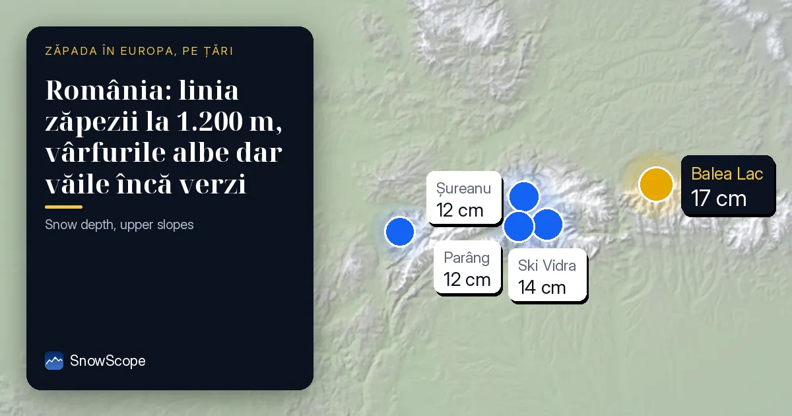
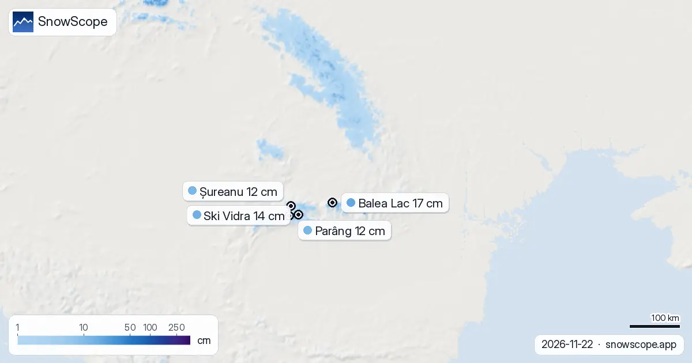
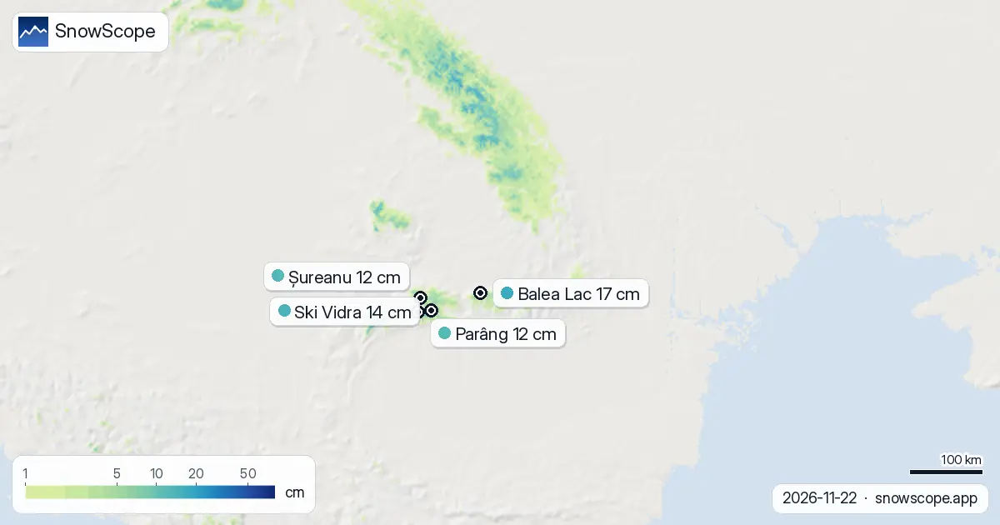

România: linia zăpezii la 1.200 m, vârfurile albe dar văile încă verzi
Munții României arată o împărțire clară între alb și verde. Deasupra 1.200 m solul este acoperit de zăpadă, dar sub această altitudine văile rămân goale chiar și după căderea de zăpadă proaspătă din ultimele zile. Aceasta este cum arată începutul sezonului când iarna abia începe: zăpada se agață de vârfurile înalte în timp ce solul mai jos așteaptă geruri mai intense.
Vezi prognoza de zăpadă pentru Balea Lac în aplicația SnowScopeGrosimea zăpezii, alerte și harta 3D, gratuit.
Locul unde linia zăpezii împarte țara
Dacă mergi prin Carpați acum vei vedea granița clar. La 1.200 m zăpada începe. Sub acest punct domină iarba și rocile; deasupra lui, albul ia locul. Această linie ascuțită este tipică pentru noiembrie în România, când aer rece stă în munții înalți dar aer mai ușor ajunge încă în văi.
Nu este un zid ci o bandă de schimbare, adesea doar câteva sute de metri lată. La această altitudine zăpada este încă subțire, deci rocile ies la iveală și trebuie să fii atent la pas dacă te aventurezi departe de drumurile marcate.
| Stațiune | Grosimea zăpezii | Zăpadă nouă, 72 h | Zilele următoare | Vârf |
|---|---|---|---|---|
| Balea Lac | 17 cm | 5 cm | 15 cm | 2.032 m |
| Ski Vidra | 14 cm | 8 cm | 15 cm | 1.974 m |
| Șureanu | 12 cm | 9 cm | 20 cm | 1.968 m |
| Parâng | 12 cm | 8 cm | 17 cm | 1.768 m |
| Muntele Mic | 10 cm | 19 cm | 26 cm | 1.793 m |

Adâncimea zăpezii după altitudine: cifrele se schimbă rapid
Între 500 m și 1.000 m: aproape deloc zăpadă. Doar 10% din sol este alb, iar acolo unde se află adâncimea este zero. Aceasta este zona colinelor—verde și maro.
Între 1.000 m și 1.500 m: zăpada începe să se așeze dar este încă rară. Adâncimea medie este 1 cm și acoperirea ajunge la 46%. Zăpadă subțire și clătiță pe iarbă.
Între 1.500 m și 2.000 m: aceasta este locul unde se petrece schimbarea rapidă. Adâncimea medie sare la 5 cm și 86% din sol este alb. Traseurile de schi și drumurile de plimbare din această bandă sunt acum acoperite de zăpadă, deși poți vedea încă pete întunecate acolo unde vântul a curățit crestele.
Deasupra 2.000 m: zăpada se adâncește la o medie de 16 cm cu 99% acoperire. La Balea Lac (2.032 m) adâncimea este 17 cm. Aceasta este zona cu zăpadă sigură. Aici, stratul este destul de gros pentru a ascunde solul. Acestea sunt altitudinile unde sezonul cu adevărat începe.

Suprafața zăpezii s-a triplat în patru zile
Pe 18 noiembrie, zăpada acoperea 3.650 km² din terenul înalt al României. Astazi acoperă 16.540 km²—de mai mult de patru ori mai mare. Acest salt arată cum ultimele zile au fost decisive pentru începutul sezonului.
În doar 24 de ore (21 la 22 noiembrie) suprafața albă a crescut cu 9.190 km². Acest ritm îți spune că zăpada cădea pe scară largă peste munți, nu doar pe câteva vârfuri. Când zăpada se răspândește atât de rapid la începutul noiembrie înseamnă că masa de aer s-a răcit în sfârșit suficient pentru a ajunge și la altitudini mai joase.
Locurile fierbinți: unde munții au primit cel mai mult
Trei munți se evidențiază. Retezatul din sud-vest a primit 24 cm în ultimele 72 de ore—cea mai adâncă zăpadă proaspătă din orice munte din România. Munții Rodnei din nord-est au fost aproape cu 22 cm. Munții Apuseni din vest au văzut 16 cm. Acesti trei s-au desprins de restul pentru că au primit fluxul umed direct.
Printre stațiunile de schi, Muntele Mic are cea mai recentă zăpadă: 19 cm au căzut acolo în 72 de ore.
Ce arată următoarea săptămână
Mâine, 23 noiembrie, este ziua cu cea mai abundentă zăpadă din prognoză. După aceea, zăpada va încetini și totalul de joi va fi probabil mai mic. Până la sfârșitul acestei perioade de trei zile (până pe 25 noiembrie), Șureanu ar putea vedea 20 cm total, în timp ce Muntele Mic ar putea ajunge la 26 cm.
Aceasta a doua rundă este încă departe și incertă, dar sugerează că mai multă iarnă vine.
Unde schiezi acum și ce trebuie să urmărești
Balea Lac rămâne cea mai adâncă stațiune la 17 cm, deși aceasta este încă shallow de început de sezon. Muntele Mic (10 cm astazi) a absorbit cea mai mult zăpadă proaspătă și s-ar putea să ajungă repede. Ski Vidra (14 cm) și Șureanu (12 cm) sunt ambele bine aprovizionate pentru alergări timpurii.
Aceasta este tipic pentru noiembrie. Fii atent la deteriorarea zăpezii din vânt pe crestele expuse. La aceste adâncimi rocile sunt încă prezente sub zăpadă—un pericol în sezonul timpuriu. Verifică buletinul oficial de avalanșă înainte să pleci de pe pârtie.
Sfaturi pentru schiori
- Schiază deasupra 1.500 m acolo unde acoperirea zăpezii este 86% sau mai mult. Sub această altitudine așteaptă-te la iarbă, roci și pete subțiri.
- Muntele Mic și Șureanu sunt prevăzute să primească cea mai multă zăpadă în următoarele trei zile (26 cm și 20 cm). Plănuiește în consecință dacă cauți teren proaspăt.
- Evită traseele off-piste decât dacă ai verificat buletinul oficial de avalanșă. Zăpada timpurie este adesea subțire și instabilă.
- Pe crestele și pantele curățate de vânt la 1.500–2.000 m, rocile vor fi vizibile sau chiar sub suprafață. Fii conștient de plasarea piciorului.
- Linia zăpezii este ascuțită la 1.200 m astazi. Traseurile sub această altitudine pot avea pete goale; rutele deasupra sunt mai sigure.
About these numbers
Resort snow depths are the deepest snow on the resort's upper slopes on the date shown; they are estimates for an area, not a measurement at one point. Forecasts can change. Always read the official avalanche bulletin before going off-piste.
Cite this report
For research, teaching or the press: the numbers and charts are free to reuse under CC BY 4.0 with this citation.
SnowScope (2026), România: linia zăpezii la 1.200 m, vârfurile albe dar văile încă verzi, https://snowscope.app/blog/ro/2026/11/romania-snow-line-22-november-2026.html, accessed 2026-11-22
SnowScope (Atlas Labs). (2026, November 22). România: linia zăpezii la 1.200 m, vârfurile albe dar văile încă verzi. SnowScope snow reports. https://snowscope.app/blog/ro/2026/11/romania-snow-line-22-november-2026.html
BibTeX
@misc{snowscope2026romaniasnowline22novembe,
author = {{SnowScope (Atlas Labs)}},
title = {România: linia zăpezii la 1.200 m, vârfurile albe dar văile încă verzi},
year = {2026},
month = nov,
howpublished = {\url{https://snowscope.app/blog/ro/2026/11/romania-snow-line-22-november-2026.html}},
note = {Published 2026-11-23 00:50 UTC; accessed 2026-11-22}
}· CC BY 4.0 · Methods, data and tools →
Balea Lac: snow and temperature by height, this winter vs last (tools) →
Follow Balea Lac
Gratuit: un mesaj când vine zăpadă nouă și prognoza în fiecare dimineață.